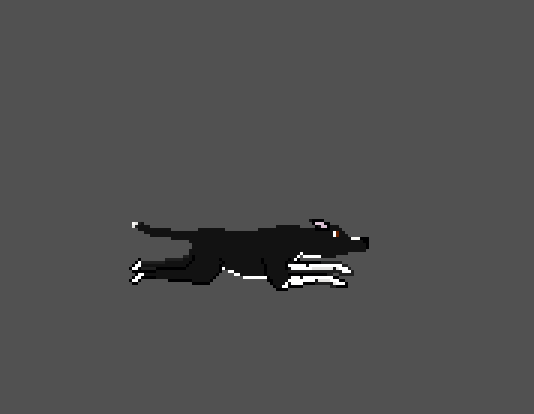

Welcome
 Welcome to the Quest for the Golden Tennis Ball devlog! This is the first of many posts detailing the development of the Quest for the Golden Tennis Ball (GTB). In this post I'll be talking about what the Quest for the Golden Tennis Ball is, a little bit about the stars of the game, Chispa and Lola, and some history behind the game.
Welcome to the Quest for the Golden Tennis Ball devlog! This is the first of many posts detailing the development of the Quest for the Golden Tennis Ball (GTB). In this post I'll be talking about what the Quest for the Golden Tennis Ball is, a little bit about the stars of the game, Chispa and Lola, and some history behind the game.
What is the Quest for the Golden Tennis Ball?
The Quest for the Golden Tennis Ball is a 2D platformer developed in Unity. The game follows Chispa, Lola, and their friends on a cross country journey to find the Golden Tennis Ball. The game takes inspiration from games of yore like Sonic The Hedgehog 2 as well as modern classics like Celeste and Pizza Tower.

The story is born out of the homesickness I felt after moving across the country and showcases the special bond people share with their four legged friends.
Who are Chispa and Lola?
Chispa and Lola are the stars of this game. They are my dogs and they each have their own unique personality.

Chispa is smart, curious, and friendly. She will be the first to tell you that she has never met a stranger.

Lola is small, snuggly, and shy. While Chispa shines in the limelight, Lola prefers to hide from strangers under the bed.
History
Making a game was one of those things where I said "how hard could it be" and then promptly found out. Despite years of coding experience making a game is easily the most difficult project I've ever taken on. In early 2024, I was dabbling in pixel art, when I realized I didn't have a place to show off my art. Sure, I could make another mod for Barotrauma, but the dark depths of Europa are no place for little Lola. I had been playing with idea of making a game for about a year at that point. My wife and I came up with the entire story for the Golden Tennis Ball over breakfast and put together a rough draft of the levels. That draft was now just sitting on my desk. Reading the draft and looking at my animations of Lola, I decided it was time to make the Golden Tennis Ball.
Development began in Python using PyGame. I built my own spawning systems, controls, and even a little intro cut scene that I shared with my friends. However, progress was slow and painful. At that point I had heard the term "Game Engine" but I had no idea what it actually entailed. With development of the game very quickly driving me insane I googled "what is a game engine" and immediately both Godot and Unity appeared and changed everything. I began playing with Godot and Unity attempting rebuild the level I had made using PyGame. After playing around with both engines, I decided to go with Unity. For me it was easy to learn and there were tons of resources, plus I wanted to expand my software skills and learning C# was an opportunity I wasn't going to turn down. From there I went on to build the different systems within the Golden Tennis Ball.
That is all I have to say for now. Next time I'll be covering character controller design and the different approaches I've taken to build a controller that feels good to use.